Pomoc
Ruch jednostajny symulacja
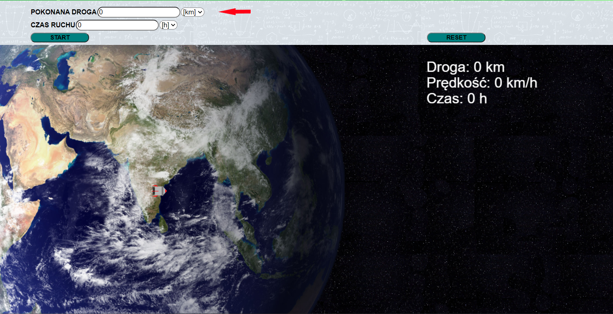W tym oknie wprowadza się długość drogi, którą powinna pokonać rakieta w czasie ruchu. Obok można także wybrać jednostkę drogi.
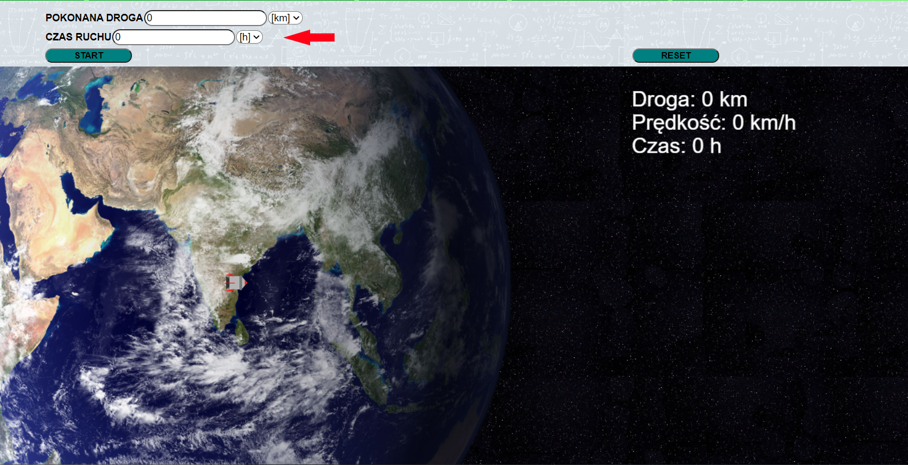W tym oknie wprowadza się czas w jakim rakieta ma pokonać drogę. W oknie obok można także wybrać jednostkę czasu.
Po naciśnięciu tego przycisku uruchomisz symulację.
Ten przycisk resetuję stan symulacji do początkowego.
Ruch jednostajnie przyspieszony symulacja
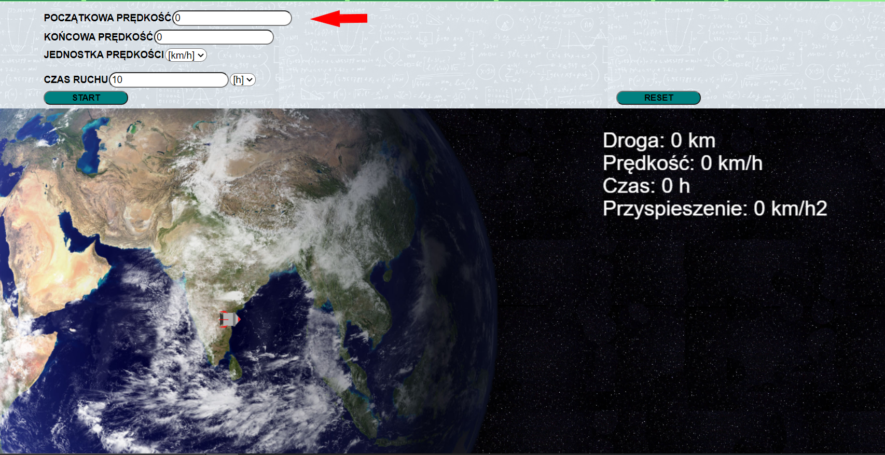W tym oknie wprowadza się prędkość początkową rakiety. Jeżeli jest ona większa od zera to statek będzie się rozpędzał, aż do opuści obszar Ziemi i wtedy zacznie się ruch. Jeżeli będzie równa zero to ruch zacznie się od razu.
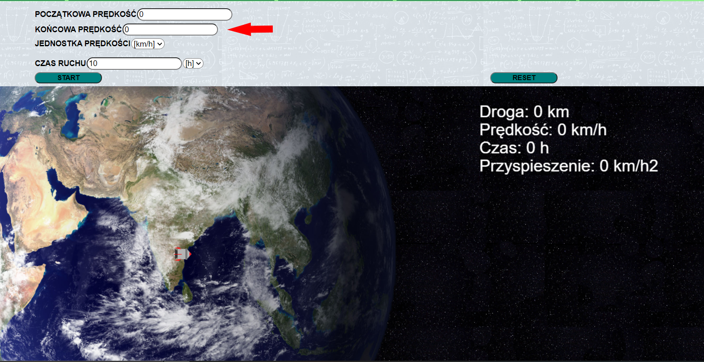W tym oknie wprowadza się jaka ma być końcowa prędkość statku, po której osiągnięciu zatrzyma się on.
Tu ustawia się jednostkę prędkości, do której automatycznie dostosowuje się jednostka czasu.
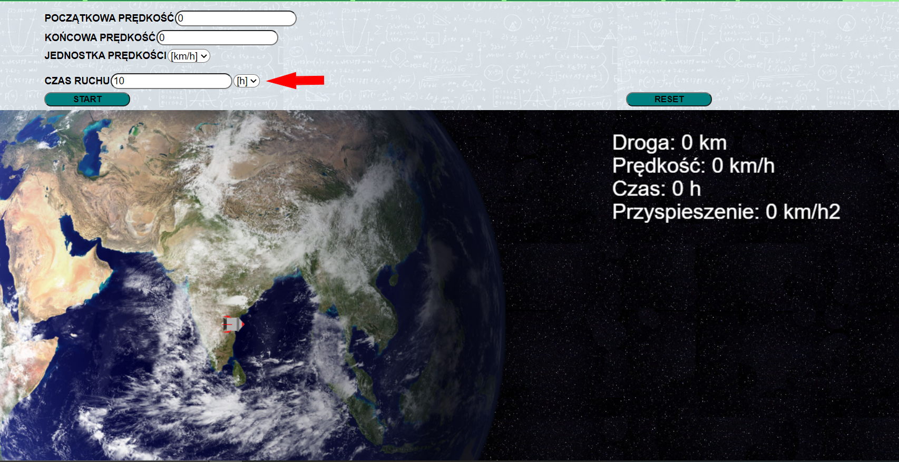W tym oknie można ustawić wartość czasu oraz zobaczyć w jakich jednostkach jest on liczony.
Po naciśnięciu tego przycisku uruchomisz symulację.

Ten przycisk resetuję stan symulacji do początkowego.
Swobodny spadek symulacja
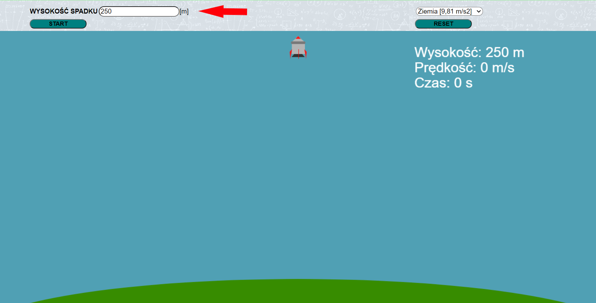W tym oknie wrowadza się wysokość, z której statek ma spaść na powierzchnię.
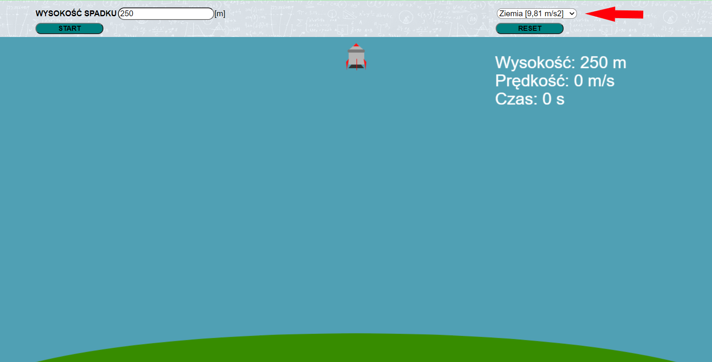Tutaj można wybrać planetę (lub księżyc), której grawitacja ma oddziaływać na rakietę.
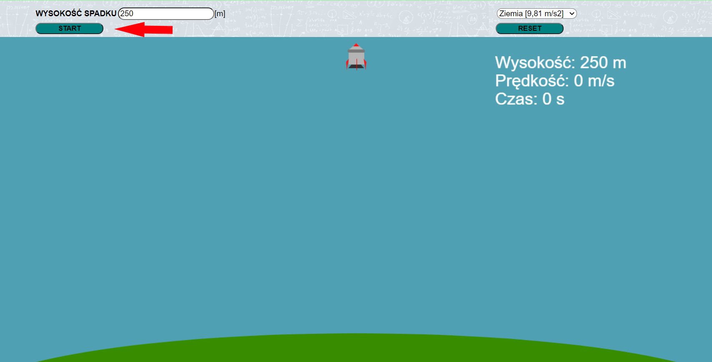Po naciśnięciu tego przycisku uruchomisz symulację.
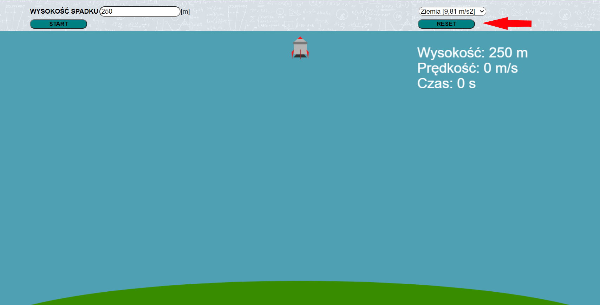Ten przycisk resetuję stan symulacji do początkowego.
Testy sprawdzające
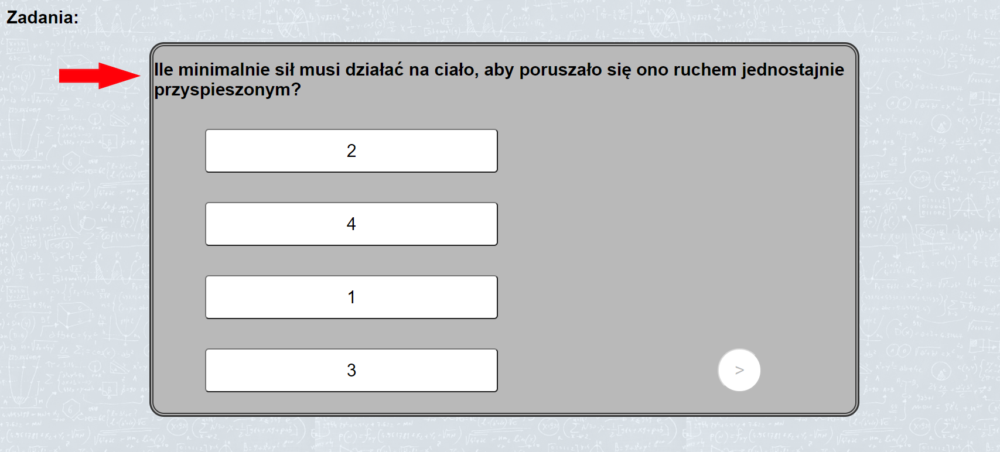Na samej górze pola testowego znajduje się pytanie dotyczące przerabianego w danym dziale materiału.
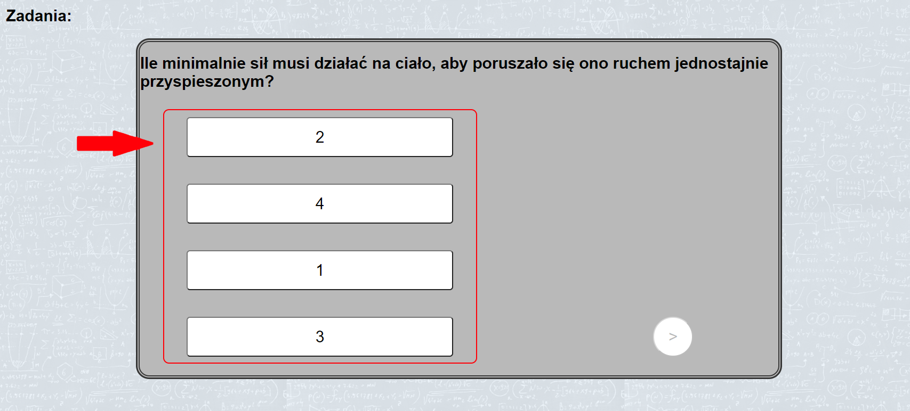Poniżej znajdują się 4 mozliwe odpowiedzi. Tylko 1 z nich jest poprawna. Po naciśnięciu na poprawną nastapi mozliwość przejścia do następnego pytania. W innym wypadku pojawi się komunikat, aby spróbować ponownie.
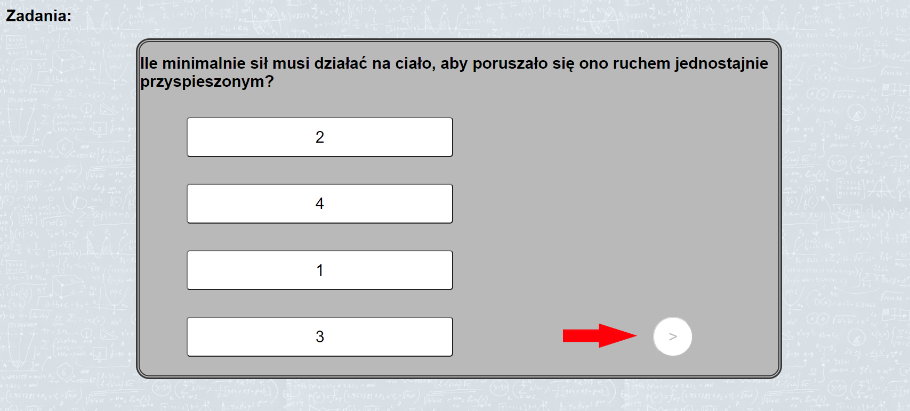Po poprawnym odpowiedzeniu na pytanie ten przycisk umożliwia przejście do następnego pytania. W każdym teście są 3 pytania.